Stor dunst fest på bastionen (bus 48) den 16. August.
bla. a. Dennis Agernlad optræder.
Kom og få Orgasme.
www.dunst.dk
| Nyheder |
| Her vil du kunne læse nyheder om Dennis Agerblad
og om nyt på denne side. Listen er kronologisk. Tilmeld dig nyhedsbrevet og få en mail, når der er nyt om Dennis Agerblad. |
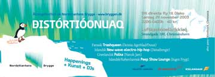 |
| Distórtióonuaq - Åbningsfestival
på Nordatlantens Brygge Færøsk Trashqueen - Dennis Agerblad / dunst Islandsk New-wave-electro-hip-hop - Dáðadrengir Grønlandsk Polka - Nanok Jam Islandsk/Københavnsk Peep Show Lounge - Ingen Frygt Dit direkte fly til Disko Lørdag 29. november 2003, 2200-0400h, 40kr. Luftkastóoelluikkiaq, Strandgade 100, Christianshavn www.bryggen.dk |
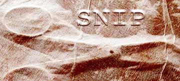 |
| SNIP - Rejsen fra mand til kvinde
De to drenge lærte hinanden at kende som børn i Roms besætterhuse. Mens Daniele Leone voksede op til at blive en ung mand med et kamera evigt og altid i hånden, voksede Gianni op til at blive en kvindelig sygeplejerske. En sygeplejerske med en hemmelighed mellem benene. I 15 år har Daniele Leone, der nu bor i Danmark, dokumenteret Giannis rejse fra drengen Gianni til kvinden Andrea. Det har resulteret i en fotokunstserie, hvoraf et udsnit nu vises der i samspil med værker skabt af billedkunstner Dorte Karstensen og mixed media-kunstneren Simon Dupont udforsker emnet transseksualitet. De tre kunstnere er gået sammen i gruppen SNIP, og efter udstillingen i Galleri Paul Kleefeld vil værkerne, der er i ustandselig viderudvikling, blive sendt til Brighton og Rom til endnu en udstillling. Ved ferniseringen lørdag d. 22. november 2003 - kl. 14 er der performance af Dennis Agerblad. GALLERI PAUL KLEEFELD & GALLERI PK PHOTO STOCKHOLMSGADE 23 DK-2100 COPENHAGEN Ø www.gpk.dk |
|
|
| På billedet ovenfor ses Miss Fish
og Liebling Siebling.
Stor dunst fest på bastionen (bus 48) den 16. August. bla. a. Dennis Agernlad optræder. Kom og få Orgasme. www.dunst.dk |
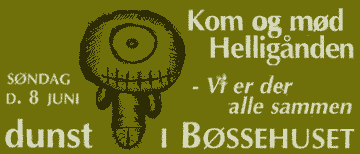 |
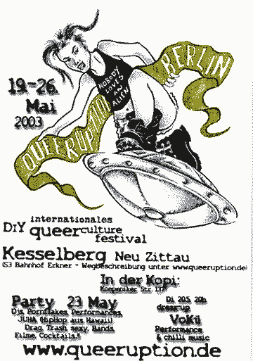 |
|
| dunst er inviteret til at optræde den 23. maj til Queeruption festivallen som afholdes i Berlin i år.
Blandt andre optræder Dennis Agerblad med et par numre. Referencer: www.queeruption.de |
 |
 |
| illustration: Mike Diana.
Så holder dunst sin 10ende fest. Og det bliver en stor en. Dennis Agernlad optræder med flere numre. Non stop dance floor, total shows, DJ's, Your kind of low life, Suprises, Bars, No hard drugs, See You! Adresse: Ungdomshuset, Jagtvej 69, Nørrebros Runddel, Kbh. N Dørene åbnes Kl.22:00 Entré 60.- Kr. Ingen billetter i forsalg. |
| Café Rust | 04-Apr-2003 |
| kl. 21:00 - 01:00 gratis DJ Nico De'Frost (Disco Electro Liwuid Stuff) DJ Minimal Martin (Minimal Electro House'y) Live Act: Sink Live Performance: Dennis Agerblad Kl. 01:00 - 05:00 kr. 50 Resident DJ Rust / Basement Guldbergsgade 8 Fredag den 04. April. Kl. 21:00 - 05:00 |
|
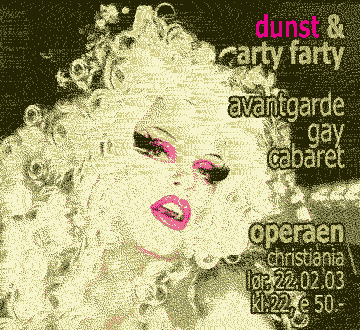 |
| dunst holder Cabaret i Operaen på Christiania. |
| Nytårsfest dunst i Bøssehuset |
31-Dec-2002 |
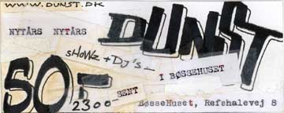 |
|
| bla.a. Dennis Agerblad optræder med et par numre. | |
| Grr-it præsenterer et spektakel |
20-Dec-2002 |
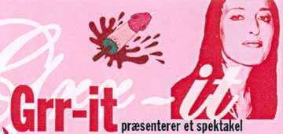 |
|
 |
|
| Grr-it præsenterer et spektakel
til støtte for Kafé Knud - en café for hiv-smittede,
pårørende og andre med tanke på det nye, kommende (finans)
år, hvor forholdene for hiv-smittede forhåbentlig fortsat ikke
forringes men gerne forbedres. Kom til premiere på kortfilmen "The Dear Hunt" Med den amerikanske tegneserieforfatter Mike Diana af Grr-it, hør den homopolitiske filminstruktør Knud Vesterskov læse op af sit seneste essay "Fuck For Peace", bliv underholdt af Performancekunstnerne Ramona Macho og Dennis Agerblad samt få sat skæg og bakkenbarter, læbestift og kindrødt på i døren af dragking Markus Hit. Fri Entré. Vel mødt! Det sker fredag den 20 December kl. 19:00 - ? På Kafé Knud i Skindergade 21, kld. København. |
|
 |
| Kom og få dig en spiller i H.C.
Ørstedsparken. (og rygterne vil vide at der måske er en snaps til de bløde og lidt poppers til de søde...) Dennis Agerblad leverer en lydinstallation med stønnelyde. |
| World AIDS Day | 01-Dec-2002 |
| KAFE KNUD |
|
| kl. 15:00 Kafe Knud åbner Kager fra La Glace - kaffe - te - øl - vand - vin - toast og suppe. Kl. 18:00 Serveres mad tilberedt af Anne Grethe Bruun. Kl. 19:30 Spiller Mike Gator Band. Kl. 20:15 Optræder Dennis Agerblad med Michael Netschajeff på harmonika. Mike Gator Band igen. Skindergade 21, kld. København K, tlf. 33 32 58 61 |
|
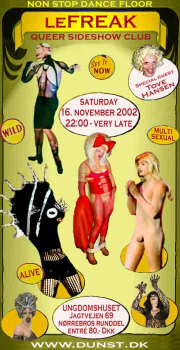 |
|
Dance Floor Stage: Guxina Blasfemica Johnny Warehouse miss Fish Puta Dennis Agerblad Hairwerk vs Holestream miss OTB Ramona Macho Sideshows: the Giant Duck Woman the Caged Adonis the Singing Ass Hole the Wandering Pussy the Trampoline Lady the Human Fish Lesbian Lounge: DJ Hairwerk Lounge performance by Aino dj's: Maria miss Fish Jean Von Baden Minimal Martin Hinsidan |
| Referencer: www.dunst.dk |
| Copenhagen Gay & Lesbian Film Festival |
19-Okt-2002 |
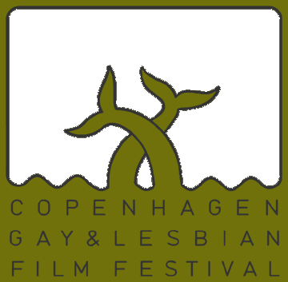 |
|
| Dennis Agerblad skal synge en sang
før filmen om Knud Vesterskov, 'From Scratz' Kl. 21:30 Cinemateket, Gothersgade 55, København tlf. 33 74 34 12 Referencer: Copenhagen Gay & Lesbian Film Festival |
|
| Kulturnatten | 11-Okt-2002 |
| KAFE KNUD |
|
| Kl. 20:30 skal Dennis Agerblad synge
egne sange. Hør smagsprøver her på siden under diskotek Uanset hvornår man dukker op vil der være noget spændende at opleve, bla.a cabaret, digte, performance, sang og musik Skindergade 21, kld. København K, tlf. 33 32 58 61 |
|
| Dennis Agerblad på Rådhuspladsen: | 17-Aug-2002 |
Underholdningen på Rådhuspladsen starter kl. 13:00. Paraden starter kl. 14:00 og er inde på Rådhuspladsen ca. kl. 16:00 Foreningen dunst skal stå på scenen og underholde i 20 min. ca. kl. 18:30 Kom og oplev Dennis Agerblad, Johnny Warehouse, Miss Fish, Tammy Holestream, OTB og Ramona Macho. Referencer: www.mermaidpride.dk www.dunst.dk |
|
 |
| Dennis Agerblad stiller op til FRØKEN VERDEN. En personligheds konkurence hvor man skal vise sit hverdagstøj, strandtøj og festtøj. Kom og stem på Dennis Agerblad. Lørdag den 10. august kl. 21 - dørene åbnes kl 20 - Den Grå Hal, Christiania - indgang fra Refshalevej - BONUS VIP EUROCLASS LOUNGE DOT COM ARENA fancy food for nyrige på balkonen ved Jailhouse AFTERPARTY DET STORE FRØKEN VERDEN DING DONG DISCO PARTY liveunderholdning: SWEETHEARTS med flere BILLETSALG MENS BAR Teglgårdsstræde 3 CENTRALHJØRNET Kattesundet 18 OSCAR Rådhuspladsen 77 MASKEN Studiestræde 33 JAILHOUSE Studiestræde 12 HEAVEN Kompagnistræde 18 pris 200,- kr. Referencer: Bøssehuset: FRØKEN VERDEN 2002 FRØKEN VERDEN 2000 QX: FRØKEN VERDEN 2002 FRØKEN VERDEN 2000 |
| Kunst Festival 2002 Thorshavn, Færøerne |
3-Aug-2002 |
| 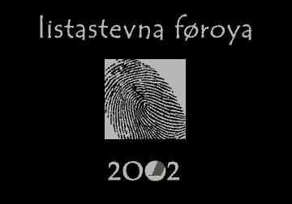 |
|
| Dennis Agerblad skal lave en performance
ved åbningen af årets store Kunst Festival. den 3. august 2002
på Kulturcenteret Nordens Hus på Færøerne. Dennis Agerblad viser to skulpturelle kjoler frem som han selv har hæklet af færøsk uld. Projektet kalder han: 'Under Hav & Jord - op på Land' Kunst Festivallen starter med modeshow på Nordens Hus. Siden vil Kunst, Musik, Sang, Teater, Film og meget andet i dagene 4. -18. august kunne ses på Kunst museet Listaskálin, Havnarbio, Müllers Pakkhús. og andre steder i Thorshavn. Dennis Agerblad's kjoler vil i resten af festivallen være udstillet i Müllers Pakkhús. Lær Færøsk og læs mere herom på nedestående henvisninger. Referencer: www.listastevnan.com (Kunst Festivallen's hjemmeside) www.nlh.fo (Nordens Hus på Færøerne) |
|
| dunst gay night cabaret |
08-Juni-2002 |
| 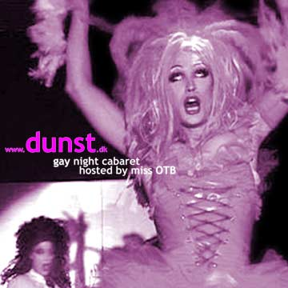 |
|
| Dennis Agerblad skal optræde
med et par numre til dunst støttefest. På billedet ses Thammy Wholestream og Ramona Macho. Adresse: Hal D Strandgade 100 Christianshavn Tid: 22:00 - 05:00 Køb billetter her: Heaven, Kompagnistræde 18 Mens Bar, Teglgårdsstræde 3 Oscar, På hjørnet af Farvergade og Rådhuspladsen Lust, Mikkel Bryggersgade 3A Pris ved forkøb: kr. 90,- Pris ved døren: kr. 110,- Reference: www.dunst.dk |
|
| Velkommen til www.dennisagerblad.dk | 16-Maj-2002 |
| Siden er lige åbnet. Se dig omkring | |